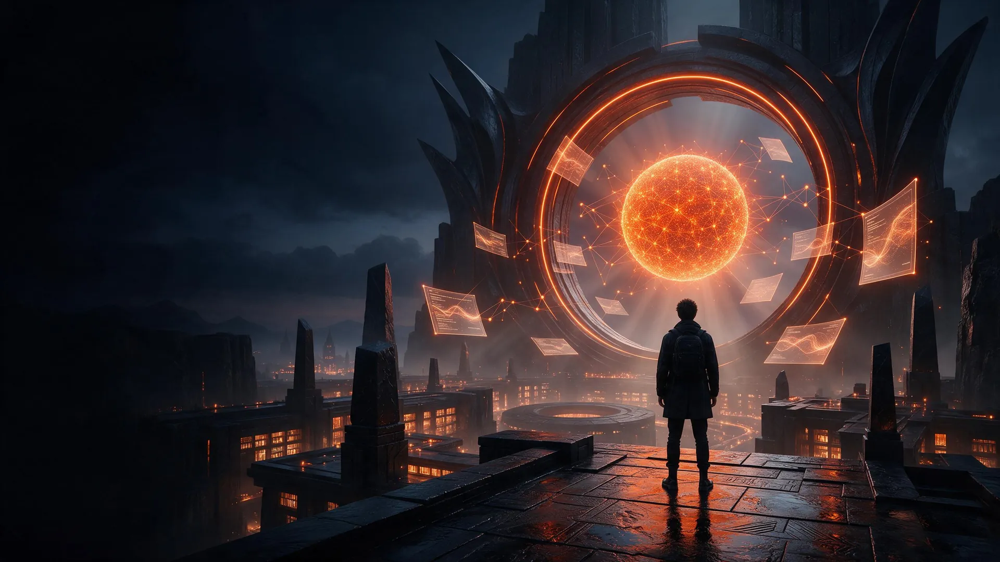
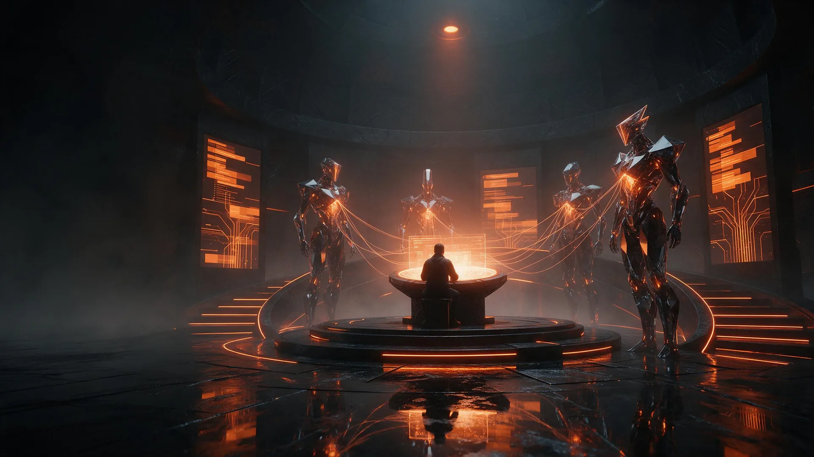
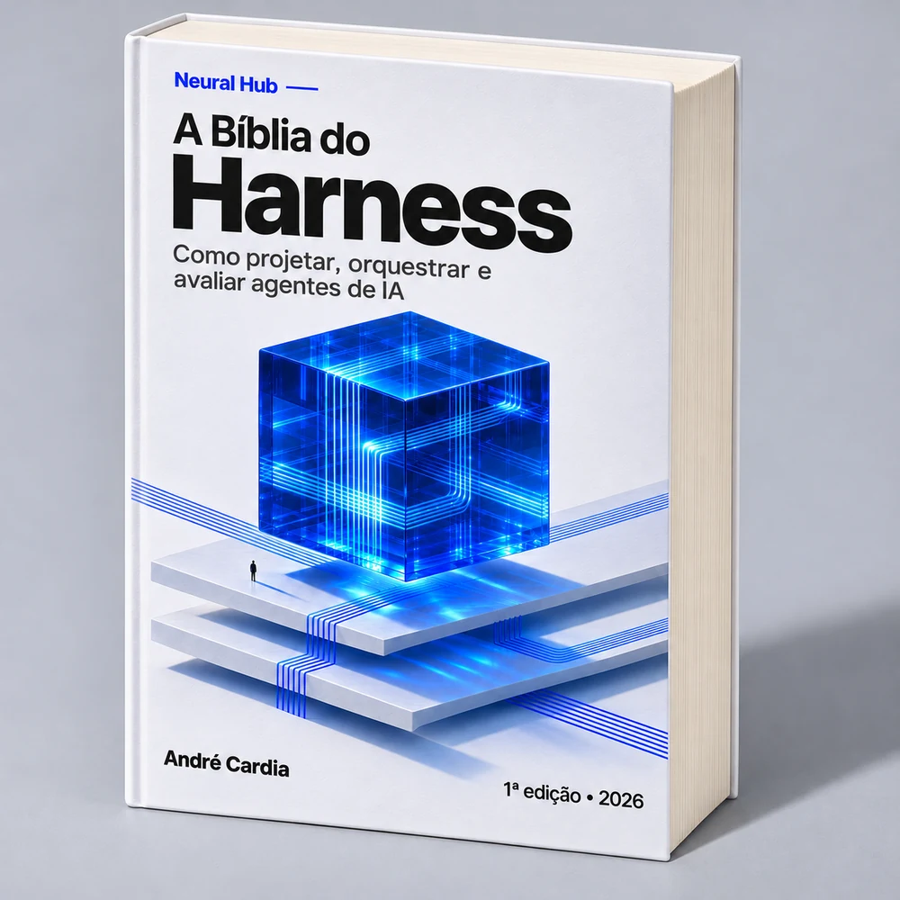
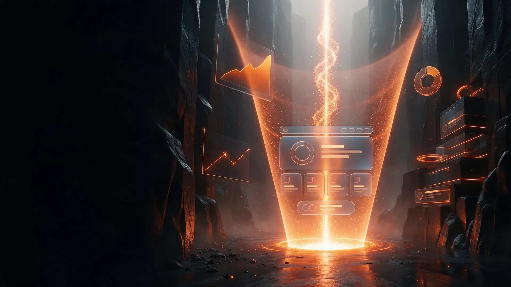
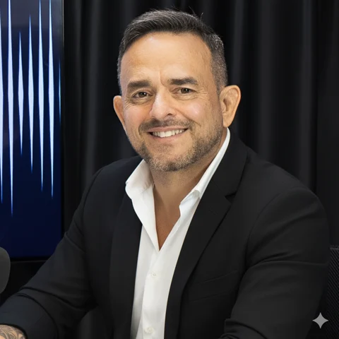
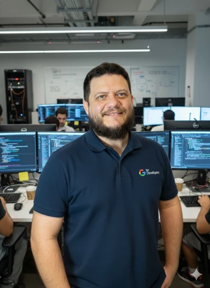

01 · Mentoria
Mentoria Zero to Hero
Formação completa em AI Engineer: 6 fases, 2 encontros ao vivo por semana, 12 meses de acesso, carga mínima de 40 horas e currículo em atualização contínua.
Valor: R$ 3.999,00 à vista

Oferta especial · Turma aberta
Mentoria Zero to Hero · Formação em AI Engineer
A mentoria completa, as formações nas ferramentas que os engenheiros de IA usam hoje, A Bíblia do Harness e a assinatura Pulsemind Starter. Tudo em um único pacote, com um único investimento.
NEURAL HUB / ZERO TO HERODo primeiro prompt
ao primeiro agente em produção.
Por que agora
O mercado já separou dois grupos: quem consome respostas e quem constrói aplicações, agentes e automações que trabalham de verdade. A diferença não está no modelo que cada um usa, e sim no método.
A Mentoria Zero to Hero foi desenhada para levar você dos fundamentos ao desenvolvimento de sistemas com IA, com engenharia de software, segurança e projetos reais. Este pacote junta, pela primeira vez, a mentoria e todo o ecossistema de formação da Neural Hub.
O programa · Formação em AI Engineer
Cada fase foi desenhada para tirar você do consumo passivo e levá-lo à construção de soluções práticas com IA, em uma trilha que continua sendo atualizada.
Fase 01
Entenda IA sem hype: transformação digital, Machine Learning, Deep Learning, data centers, GPUs e os players que definem o mercado.
Fase 02
Domine GPT, Claude, Gemini, tokens, embeddings, janela de contexto, bancos vetoriais e prompting profissional para uso real.
Fase 03
Construa agentes com memória, tools, RAG, APIs e skills com Open Claw e Claude Cowork para aplicações de alto nível.
Fase 04
Do vibe code à engenharia de sistemas assistidos por IA. Estruture aplicações com técnicas de engenharia de software, PRD, system design e pensamento de engenharia.
Fase 05
Prompt injection, jailbreak, privacidade, LGPD, Physical AI, robótica e as tendências que vão redefinir o jogo.
Fase 06
Saia com agentes, automações e soluções funcionando. Não com teoria esquecível, mas com capacidade aplicada.

Na prática
Ao final da formação, você desenvolve agentes que consultam documentos, usam ferramentas e se conectam a outros sistemas. E sabe decidir o que pode ser autônomo e o que deve voltar para as pessoas.
O que você leva
Além da mentoria, você recebe as formações, o livro e a plataforma que completam a jornada de um AI Engineer.
01 · Mentoria
Formação completa em AI Engineer: 6 fases, 2 encontros ao vivo por semana, 12 meses de acesso, carga mínima de 40 horas e currículo em atualização contínua.
Valor: R$ 3.999,00 à vista
02 · Formações
Valor: R$ 2.999,00

03 · Livro digital
O livro de André Cardia sobre harnesses de agentes: como Claude Code, Codex e outros ambientes orquestram modelos, ferramentas, contexto e permissões para desenvolver software.
Valor: R$ 249,00
04 · Plataforma
Plataforma de IA generativa que integra texto, imagem, áudio e vídeo, com experts personalizados: você define persona, contexto e etapas do fluxo.
Valor: R$ 999,60

Investimento
| Mentoria Zero to Hero · Formação em AI Engineer | R$ 3.999,00 |
|---|---|
| Formação em Claude.ai, Codex, DeepSeek Harness e Antigravity · Infraestrutura de Redes · Docker · Landing Pages de alta conversão · Growth Marketing (2 cursos) | R$ 2.999,00 |
| Livro digital A Bíblia do Harness | R$ 249,00 |
| Assinatura Pulsemind Starter | R$ 999,60 |
| Valor total |
Pacote completo · em até 12x
R$368,64/mês
12x de R$ 368,64 — ou R$ 3.561,40 à vista
Economia de R$ 4.685,20 · mais de 56% de desconto
Quem conduz
Profissionais que atuam no mercado, constroem soluções e ensinam o que funciona de verdade.

CEO · Estratégia e formação
CEO da Neural Hub e founder da Pulsemind. Une experiência em docência e ciência de dados à formação de profissionais e lideranças em Inteligência Artificial. Autor de A Bíblia do Harness.

CTO · Engenharia de software
Conduz a arquitetura e a implementação de sistemas, integrações e agentes de IA para empresas.
Equipes que já treinaram com a Neural Hub: Beiramar Shopping, Grupo Breitkopf, BAESA, AEMFLO, Ford Dimas, SESCOOP/SC, Osklen, ORSEGUPS, AMCHAM e Sistema OCESC.
Dúvidas frequentes
Não. A Fase 01 começa pelos fundamentos e o programa avança, passo a passo, até o desenvolvimento de aplicações e agentes. Quem já programa aproveita as fases de arquitetura e projetos para ir mais longe.
São dois encontros on-line e ao vivo por semana, com carga horária mínima de 40 horas. Os conteúdos ficam disponíveis na plataforma da mentoria durante os 12 meses de acesso.
Depois da confirmação do pagamento, você cria sua conta na plataforma com o mesmo e-mail usado na compra. A equipe da Neural Hub envia as orientações de acesso a cada item do pacote.
Sim, nos primeiros 7 dias após a contratação.
Não. O currículo é vivo: novas ferramentas, modelos e práticas entram no programa conforme o mercado evolui.
Mentoria Zero to Hero · Neural Hub
Mentoria + formações + A Bíblia do Harness + Pulsemind Starter.
De R$ 8.246,60 por 12x de R$ 368,64 ou R$ 3.561,40 à vista.